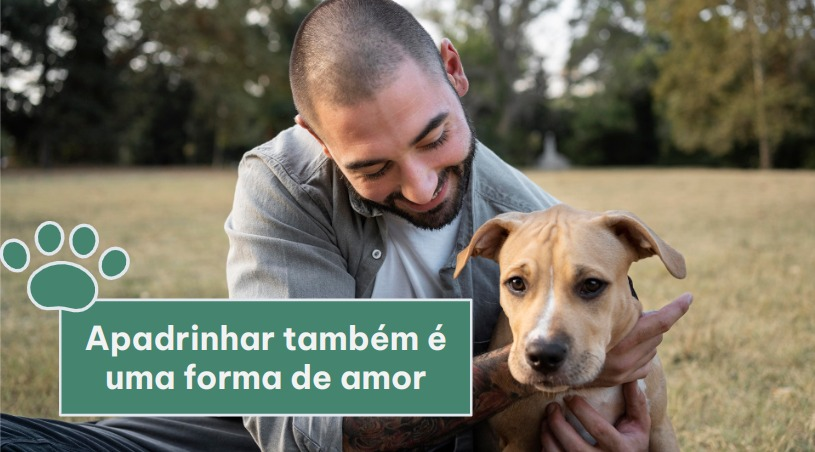

Apadrinhe um Animal

No nosso site de adoção de animais, você pode fazer a diferença mesmo que não possa adotar um animal. Ao se tornar padrinho ou madrinha, você oferece suporte financeiro mensal para cuidar de um animal em nosso abrigo. Com a sua contribuição, fornecemos alimentação, abrigo e cuidados veterinários.
Apadrinhar é flexível e acessível. Você escolhe o animal que deseja apadrinhar e define o valor da sua contribuição mensal. Como padrinho, você recebe atualizações regulares sobre o animal, pode visitá-lo no abrigo e fazer parte de uma comunidade apaixonada por animais.
Para apadrinhar qualquer animal, existem 3 opções:
- Básico – R$ 40,00 para ajudar na alimentação do pet;
- Médio – R$ 70,00 para ajudar na alimentação, vacinas
e vermífugos;
- Total – R$ 100,00 para ajudar na alimentação, vacinas e
todos os gastos envolvidos como casinhas, brinquedos,
veterinários, água, luz, transportes, tratadores etc.
Juntos, podemos criar um mundo onde todos os animais recebam o amor e o cuidado que merecem. Seja um Anjo Protetor e faça a diferença na vida de um animal necessitado. Preencha o formulário de apadrinhamento em nosso site e seja a luz na vida de um animal!
QUERO APADRINHAR UM FOCINHO